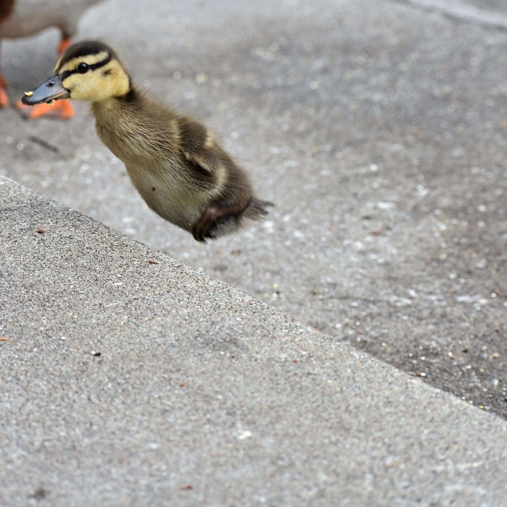
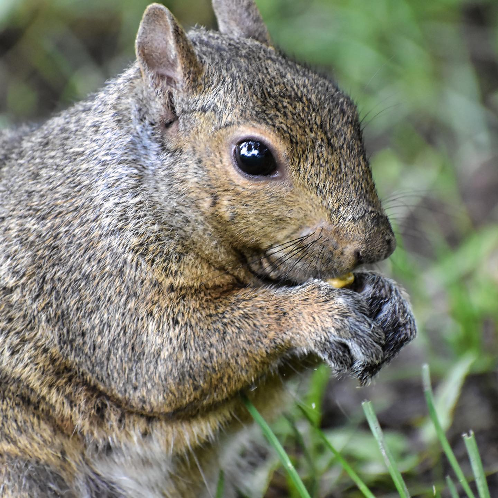

Dusty's Photos
These are some of my favorite photos I have taken since I've had my camera.
This is me almost a year ago!

- this is one of my favorite pictures
- The duck was following its mother
- The only way was up the stairs

- The squirrel seems very happy in this photo
- I kept feeing him so I could gain his trust
- Once he sat still I was able to capture this image